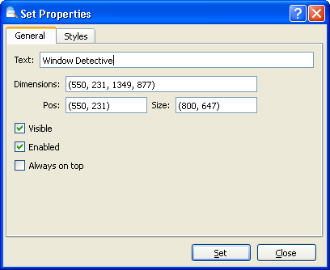

You can modify a window's properties by right clicking on that window in the tree and selecting "Set Properties...". A dialog is displayed allowing you to set a number of properties including window styles. Note that not all properties can be modified.

The "Set Properties" dialog
Below is a list of window properties that can be modified:
| Text | Sets the window or control's text. |
| Dimensions/Pos/Size | Sets the position and/or size of the window or control. In pixels where 0,0 is the top-left corner of the screen. |
| Visible | Whether the window is visible or not. |
| Enabled | Whether the window is enabled or not. |
| Always on top | If the window should remain on top of any other windows, even when it does not have focus. |
Within this dialog, you can also set window styles.